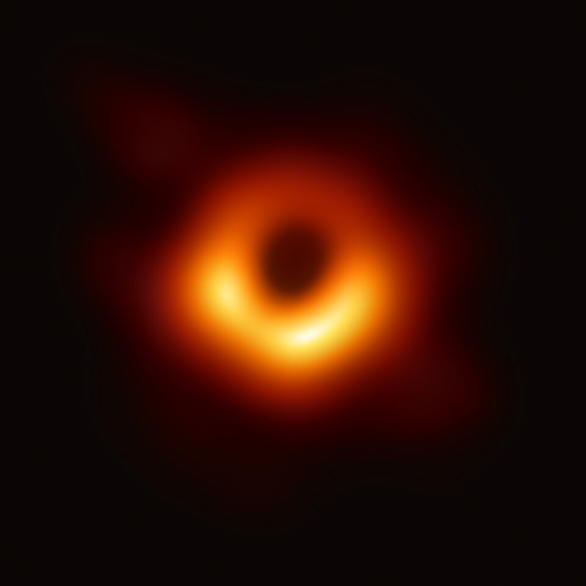
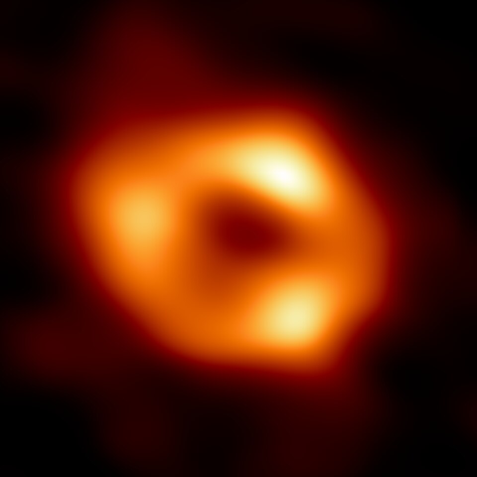
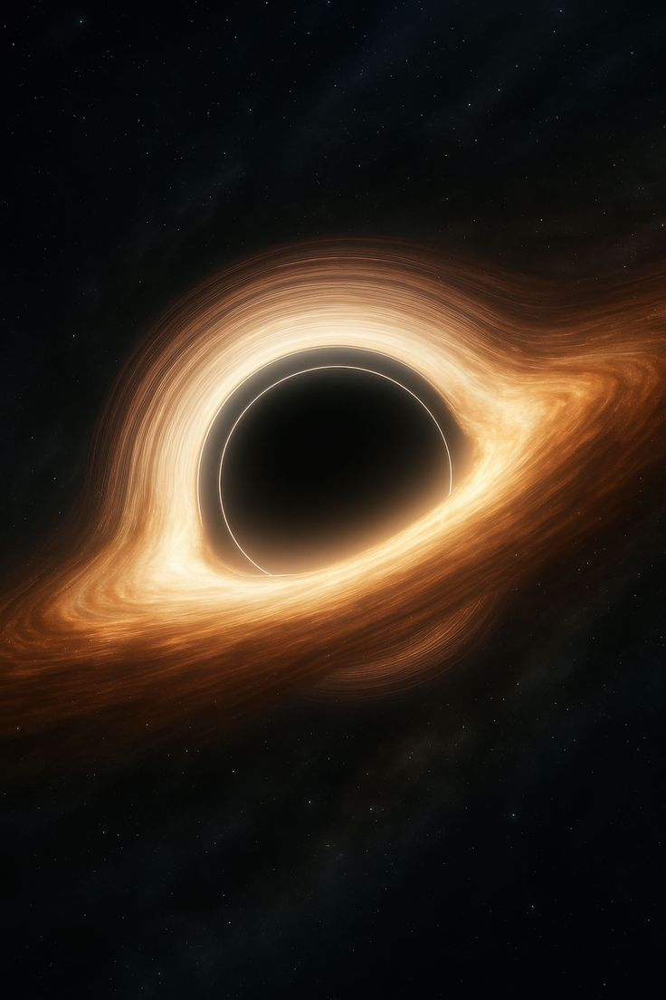

The Edge of Everything
Black Holes
First image of a black hole — M87* captured by the Event Horizon Telescope, 2019

Messier 87* — 6.5 Billion Solar Masses
The first direct photograph of a black hole's shadow, located 55 million light-years away in the constellation Virgo.

Sagittarius A*
At the heart of our galaxy lurks Sagittarius A*, a supermassive black hole with a mass of 4 million Suns, compacted into a region smaller than our solar system. In 2022, the Event Horizon Telescope released the first image of Sgr A*, confirming decades of indirect evidence from the orbits of nearby stars.

The Event Horizon
The event horizon is the "point of no return" — not a physical surface but a mathematical boundary beyond which not even light can escape. An observer falling in would notice nothing unusual at that moment, but an outside observer would watch them slow to a halt and fade into reddish oblivion, frozen in time by gravitational redshift.

Quasars & Jets
When supermassive black holes actively consume surrounding matter, they become quasars — the most luminous sustained objects in the universe, outshining entire galaxies. Magnetic field lines threading through the accretion disk launch bipolar jets of plasma at nearly the speed of light, stretching for thousands of light-years into intergalactic space.
Hawking Radiation & the Information Paradox
In 1974, Stephen Hawking proposed that black holes are not entirely black. Virtual particle pairs constantly pop into existence near the event horizon; when one falls in while the other escapes, the black hole loses energy — and mass. This "Hawking radiation" causes black holes to slowly evaporate over timescales dwarfing the age of the universe.
This leads to one of physics' deepest puzzles: the black hole information paradox. Quantum mechanics demands information is never destroyed; general relativity says everything that falls into a black hole is lost. Resolving this contradiction may require a theory of quantum gravity — the holy grail of modern physics.